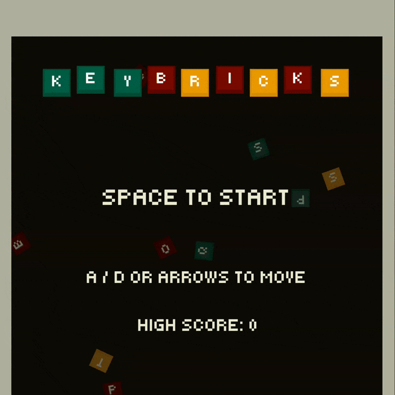

Keybricks released!

Keybricks is live! The second game in the Problem 18 challenge! Inspired by a mechanical keyboard, keep the ball in play with your space bar and destroy all the key caps!
Try it out on itch.io: https://problem-18.itch.io/keybricks
Keybricks
Creating this game required a lot more out of me than just drawing a few sprites, moving them in one direction and calling it a day. It required for me to think of what I actually want this game to be, what my own twist on it would be, and most importantly, how do I even create it?
How did I get to the theme of the bricks being key caps, the paddle a space bar?
What makes it different from the original Breakout game?
With Godot's documentation on my second screen, I went to work by first thinking of the answer to these questions. Quite quickly I found myself thinking of keyboards. Their key caps, to be specific. I mean, they are bricks in essence, so why not have them as such in the game? Surround the level in some walls, let the ball hit some key caps.
It can be even better!
With the idea, came other ideas. What if the paddle is a space bar? What if the key caps actually have letters on them? What if hitting a key cap means actually typing something?
With all these questions in mind, I had enough of a vision on this to start working, and off I went. Only to quickly stumble into a problem.
Key caps and scope
With all these ideas, came decisions. These decisions were made without thinking of the system behind it which quickly caused me to get stuck. I wanted the key caps to actually type something when they're hit, so I came up with this idea that a specific word could be spelled per level, if the correct key cap is hit and destroyed. Initially, this was supposed to be a sub-goal to pass the level. Spell the word out within the timer, or the level is lost.
This added a lot more scope than I wanted it to. I would've had to keep a time in mind, make sure the key caps spawn and randomize fairly, and balance the game with the ball's and paddle's speeds to do that as well.
The scope increased from "keep the ball in play, destroy all the bricks" to "keep the ball in play, destroy all the bricks, spell out the word, do that within time". That is a lot of extra scope for something that wasn't necessary, yet at the time I felt otherwise and kept working with that idea in mind.
And so, my first time of experiencing scope creep occurred. A lesson was learned here!
Prototype before committing.
If you want to see it listed:
- Randomize the key caps
- Give the key caps an appropriate spawn position
- Spawn enough of said key caps to make the spelling possible
- Keep tabs on the timer
At the time, this seemed to be a simple addition. It wasn't.
So off I go, working on the game, trying to put these systems together. Let's review them one by one.
The key cap
Creating the key cap scene itself was simple, I drew a very basic key cap-ish shape in Aseprite, put that in a Sprite2D, set a character inside the sprite, added a collision shape and considered it done.
Later on I did add various "difficulties" to the key caps, green being easy, orange being medium, and red being hard. Each representing how many times the key cap would have to be hit, to be considered destroyed and thus taken away from the level. However, there's not much need in going in depth about that for now.
![Pixel art key cap in green color]()
Randomize the key caps
I put a few key caps onto the main scene and wanted to create an algorithm to assign a random letter to each key cap. I used unicode to pick a random character between A and Z. Assigned the character to the key cap that was being spawned and that actually worked better than I expected.
Here's most of the code to get that going:
@export var rows := 1
@export var columns := 1
for x in columns:
for y in rows:
var brick: Brick = _brick_scene.instantiate()
var size := brick.get_size()
var position_offset := size / 2.0
var x_position := float((position.x + position_offset.x) + size.x * (x - 1))
var y_position := float((position.y + position_offset.y) + size.y * (y - 1))
brick.difficulty = difficulty
add_child(brick)
brick.global_position = Vector2(x_position, y_position)
It's actually quite simple, we get the brick's size, we offset it's position by said size, and then for each column and row we spawn a brick. This was used in a scene called brick_set, and it's sole responsibility was to take care of the spawning.
The parent node took care of assigning the letter, as it was easier to keep the word to spell out in mind.
var bricks := get_tree().get_nodes_in_group("bricks")
var letter_attempts := 0
for i in bricks.size():
var letter := String.chr(randi_range(A, Z))
letter_attempts = 0 if available_letters.has(letter) else letter_attempts + 1
if available_letters.size() > 0:
if available_letters.has(letter):
var letter_index := available_letters.find(letter)
available_letters.remove_at(letter_index)
letter_attempts = 0
elif letter_attempts >= max_letter_attempts:
var letter_index := randi_range(0, available_letters.size() - 1)
letter = available_letters[letter_index]
available_letters.remove_at(letter_index)
letter_attempts = 0
var brick: Brick = bricks[i]
brick.brick_destroyed.connect(_on_brick_destroyed)
brick.change_letter(letter)
For every brick, we get a random letter, we keep count of how many attempts were made to assign a letter from the assigned word to the brick. I did this to make sure that the word is actually spellable every time, and not just rely on hopeful random generation.
The unnecessary scope
Now the word to spell out came into play, and this was actually not too bad. It was a simple matter of using signals to let the level scene know every time a brick was destroyed, the level would then compare and fill in the necessary letters in the word.
Signals?
Signals are awesome. Using them allowed me to connect events happening in child nodes, to trigger events to happen in the parent node, and as a nice side-effect trigger all kinds of events in other child nodes.
A brick gets destroyed, emits a signal to let the level scene know which letter it had, the level would evaluate whether this letter is useful for the word, and adjust the HUD.
On the other hand, the timer having to be a deciding factor in the player winning or losing felt more and more out of pocket. I realized that such a timer should not be punishing, and only adding to the game's fun, instead of taking away from it. Only then to simply drop the timer as it did not feel fun during testing.
The bounce of the ball
My first implementation of the ball was to use Godot's built-in bounce function on every surface, and I thought that that would be it.
It bounces, yay!
— Me
Relying on Godot's built-in functionality and physics was absolutely the way to go, however it wasn't a solution for every situation. The ball's movement was too random and left the player only an illusion of control. I realized the paddle should reverse the ball's direction and not just be another wall to bounce on.
So I stood up, imagined myself being the paddle and the ball approaching me. The ball arrives at my left shoulder, bounces off and flies to my right. Okay, so the solution is to revert that. Why not just take the direction I am looking at when the ball bounces off of me, and change the ball's course into that direction.
And that's how I solved it when I found direction_to() in Godot's documentation.
_direction = _direction.bounce(collision.get_normal())
if collider is Paddle:
_direction = collider.position.direction_to(position)

Last but not least
After working out the key caps and their randomization, the ball's bounce, and giving the player control in return, I finally was able to refine other stuff of the game.
I reworked the sprites for the walls, the key caps and the space bar. Did my best to give them some kind of shading or depth, but it's up to you whether I actually succeeded. 😄
I learned to create a Main scene to better manage level transitions, and keep data & state even as levels change. I learned how to make a simple AudioManager by following an excellent tutorial from KidsCanCode.
I put a little bit more effort into the sound effects by capturing my own keyboard, and me knocking on the wall. You can probably guess which sound went towards with part of the game.
Lessons learned
This game is easily my best one so far. Of course, there isn't much to choose from but I am very proud of it. I think I managed to make a satisfying and responsive game, courtesy of my keyboard's sounds! A lot of new knowledge was gained through the development of this game, and it only made me more excited to share, improve and keep it up for the next game!
Some of the lessons I brought along with me:
- The difference between move_and_slide() and move_and_collide().
- Basics of the AnimationPlayer to create some floating keybricks for the main menu and end screen.
- Better scene management (Main scene).
- That even a simple idea extra on top of the original idea, can lengthen development by double, if not more.
- Next time, I should prototype before sticking to an idea until it's late.
Try Keybricks on itch.io and let me know what you think, was I right to say it's a responsive and satisfying game? I'll see you in the next post. Please feel free to reach out on social media! ❤️
https://problem-18.itch.io/keybricks
I want to read more!
It'd be my honor!
- Tricat released!: My first game in the challenge!
- About me and Problem 18: Explanation of me and Problem 18!